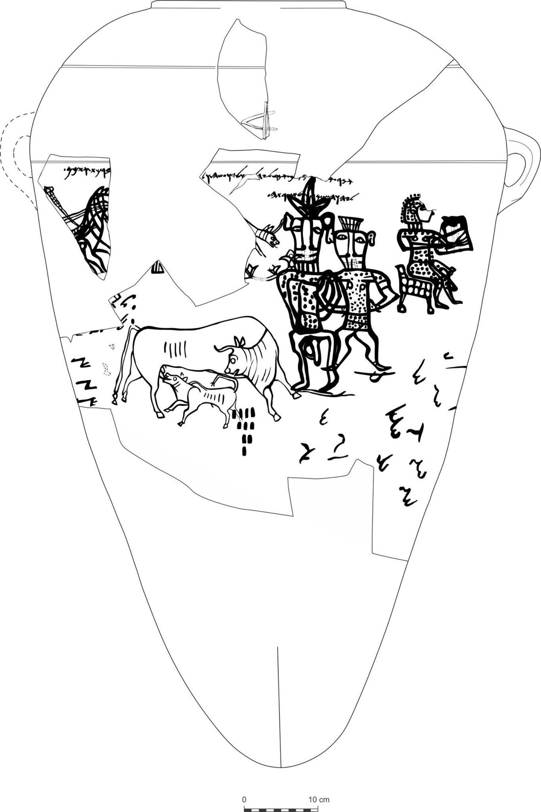

Kuntillet Ajrud Inscriptions

- Find Name
- Kuntillet Ajrud Inscriptions
- Historical Period
- Iron Age II
- Artifact Date
- 8th century BC (c. 800 BC)
- Date Discovered
- 1975–1976
- Discovery Location
- Kuntillet Ajrud, northeastern Sinai
- Current Location
- Israel Museum, Jerusalem
- Timeline Era
- Divided Monarchy
- Description
- Inscriptions and drawings on plaster walls and large storage jars at a desert waystation, excavated by Ze'ev Meshel. The blessings invoke 'Yahweh of Samaria and his Asherah' and 'Yahweh of Teman and his Asherah.' Scholars debate whether Asherah here is a goddess, a sacred object, or a symbol — but all agree the texts show Yahweh worship mixed with other devotion in the eighth century.
- Biblical Significance
- The prophets spent their lives fighting exactly this mixture: Yahweh honored alongside Asherah poles and local shrines. Kuntillet Ajrud is the archaeology of Israel's divided heart — a blessing written on a jar, in the desert, naming the LORD and his Asherah in the same breath the prophets condemned.
- Evidence Class
- Contextual
- Interpretations
- Scholars agree the inscriptions are genuine eighth-century blessings; debate centers on ‘his Asherah’ — a goddess, a sacred object, or a symbol of Yahweh’s presence.
- Scripture Illuminated
- Related Books